Tutorial 2: MusicBox Detector
This tutorial will demonstrate the four most important stages in every Machine Learning process.
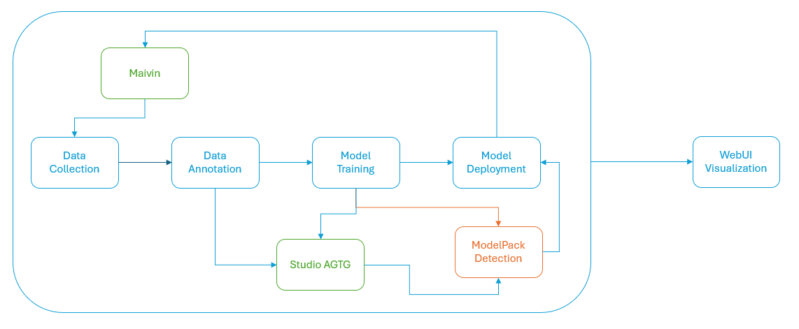
The process begins with the Maivin Platform. Using the web interface on the device, we can start the recording process. Once data is recorded, we can access the recording files and import them into EdgeFirst Studio. Studio will create a dataset from the recording. Once the dataset is created, we can begin the annotation process to produce both bounding boxes and segmentation masks. For this tutorial, we will focus solely on bounding boxes.
The duration of the annotation process depends on the dataset size. For this specific dataset, which contains approximately 150 images, the entire annotation process takes around 3 minutes. After annotation, we need to partition the dataset and use ModelPack for training. The training process will generate the model checkpoints, which will be deployed to the target device in the final step.
Data Collection
To begin recording a dataset, power on the Maivin platform and connect it to a network in order to access the Web User Interface (WebUI).
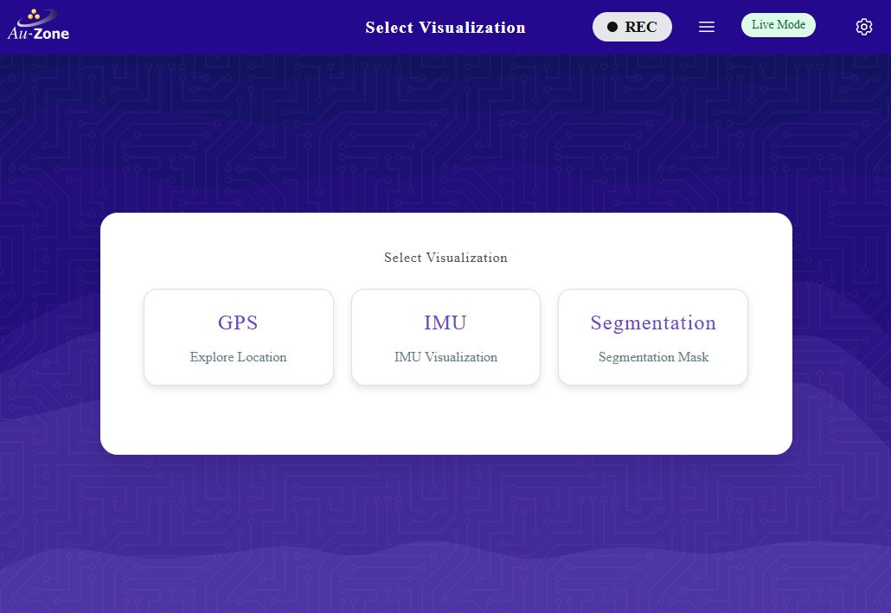
Follow these instructions for capturing data using an EdgeFirst Platform.
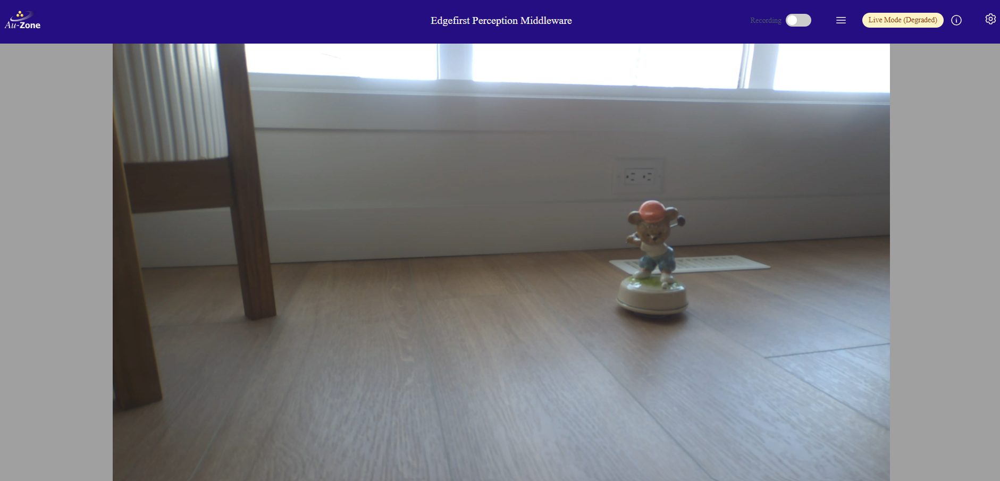
Segmentation View
We recommend using the Segmentation view first to check the camera is enabled and the target object is visible.
The recording process takes a few seconds to initialize all services on the device. Once ready, the GUI will display the name of the recording (in red) that is about to begin. Now switch to the camera view and start interacting with the object — reposition it, and make creative or playful changes to the scene.
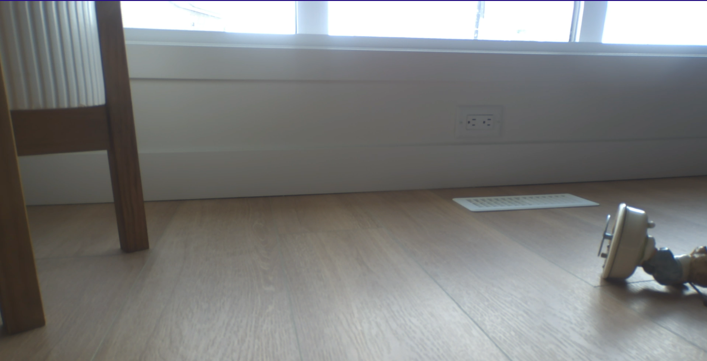 |
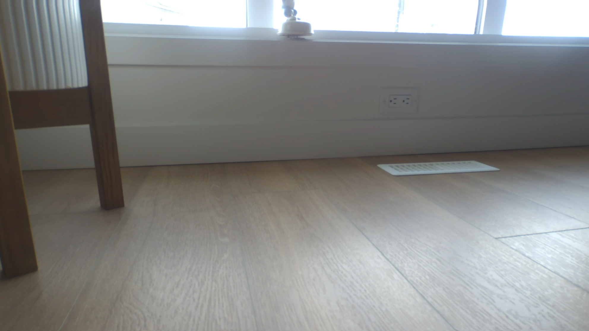 |
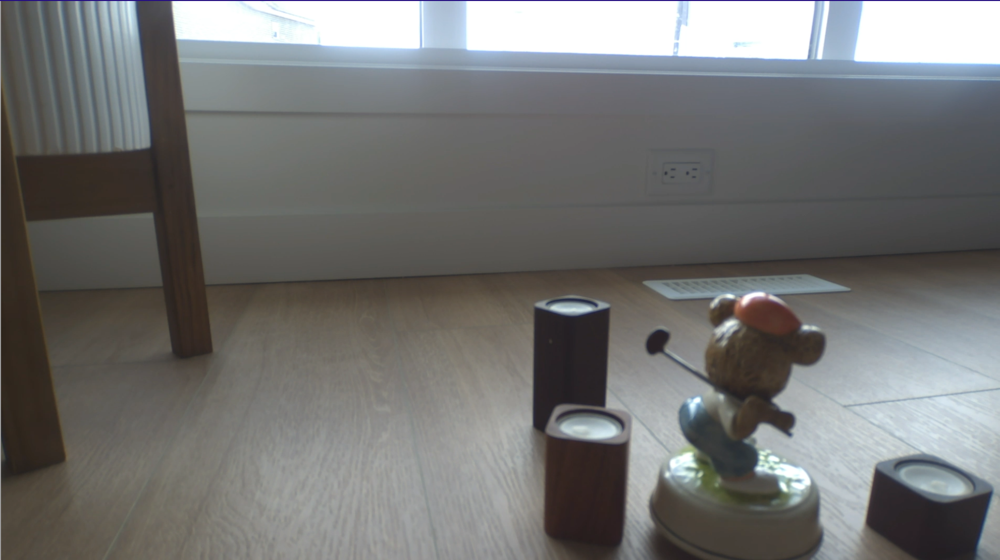 |
|---|---|---|
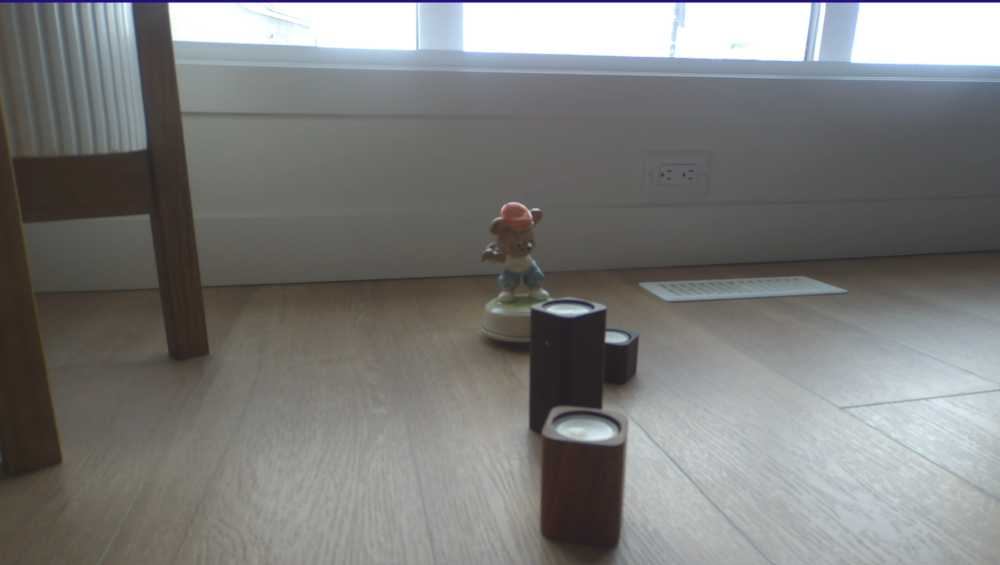 |
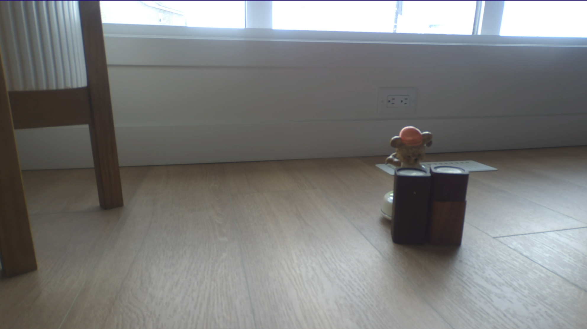 |
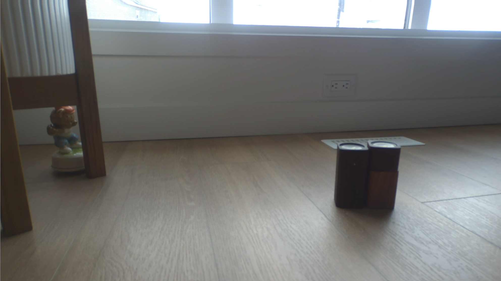 |
Reminder
Randomness helps improve dataset quality and enhances the model’s generalization ability.
Once you have completed your recording, you can find instructions for downloading your recording to your PC and uploading the recording to EdgeFirst Studio.
Restore Snapshot
Warning
Restoring a snapshot will incur costs against your EdgeFirst Studio account.
In the Snapshot interface, hover over "MusicBoxTutorial" (renamed above). A three-dot menu will appear on the right side of the GUI (next to "Available"). Click it and select Restore. See Restore Snapshots for details.
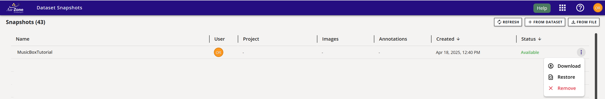
The GUI will prompt you to select a project and dataset name. Choose the "Tutorials" project and name the dataset MusicBoxTutorial.
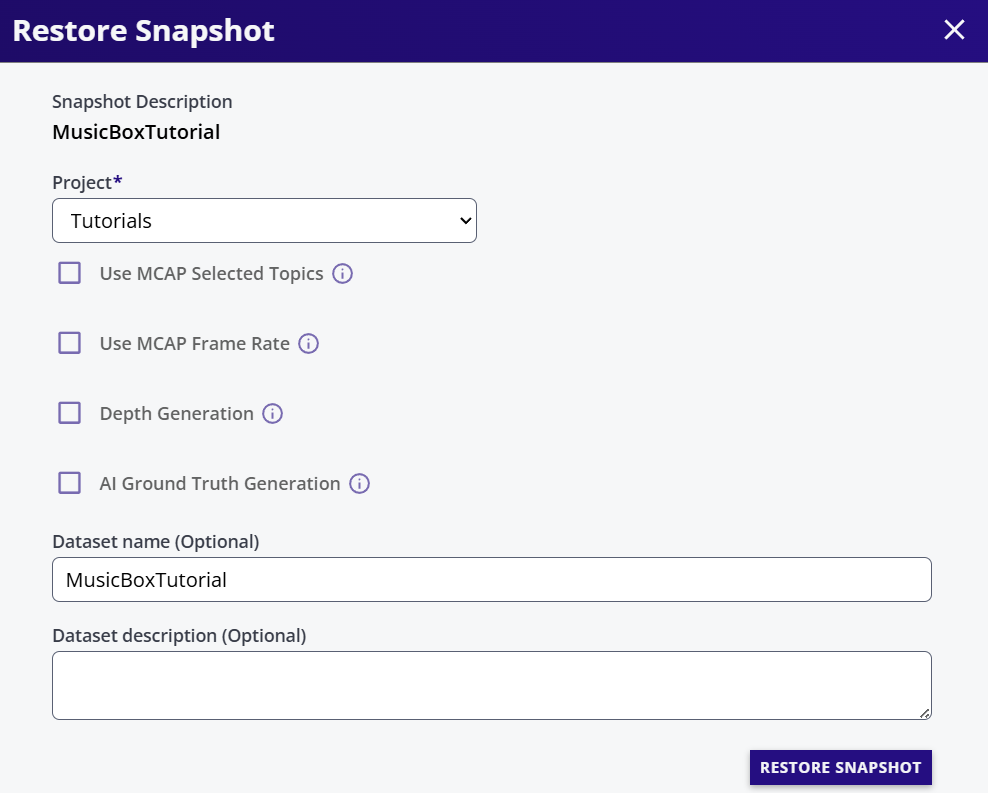
Additional Options
The restore dialog provides advance options like Topic Selection, Frame Rate, Depth Generation, and Automatic Ground Truth Generation. Leave all options at their default settings. These features are explained in AGTG.
Click RESTORE SNAPSHOT. The dialog will close, and the dataset API will export the selected MCAP topics into a dataset, which will appear in the Dataset User Interface. Progress is shown in the Dataset UI.
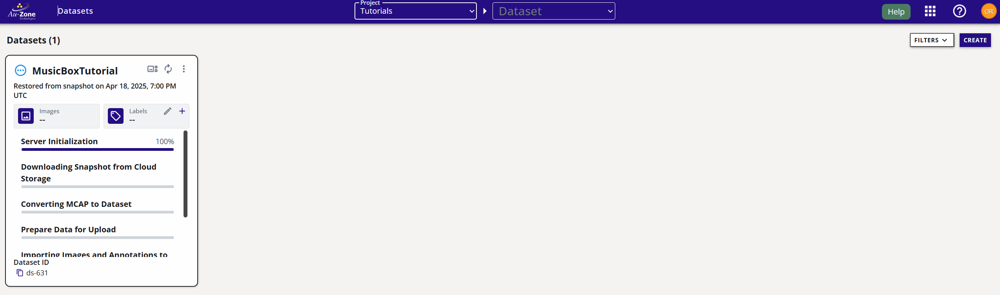
The dataset is exported in EdgeFirst Studio Format.
Data Annotation
Once the dataset is exported, we can see all the recorded sequences.
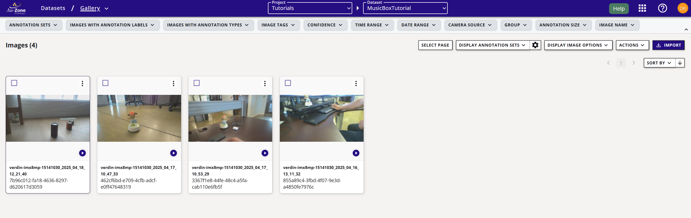
In the dataset view, add the classes to be annotated. For now, we will add a single class: musicbox.
Now we can start annotating the sequences. It's important that the dataset was imported as sequences, so the AGTG pipeline can use timing and tracking data to annotate most frames automatically.
Select any sequence to visualize it. Remember that MCAPs were exported at one frame per second.
If you are new to Studio, refer to Automatic Ground Truth Generation (AGTG) to learn how to annotate the dataset. Your dataset should now look like this in the Gallery (disable the "Show Sequences" option).
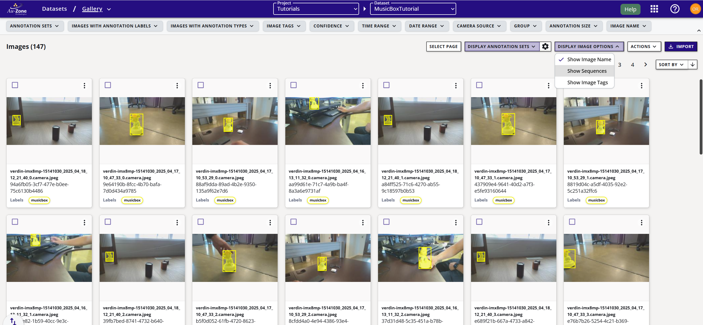
Dataset Partition
To train the model, it is essential to create training and validation groups within the dataset. The training set teaches the model, while the validation set is used to evaluate model performance during training.
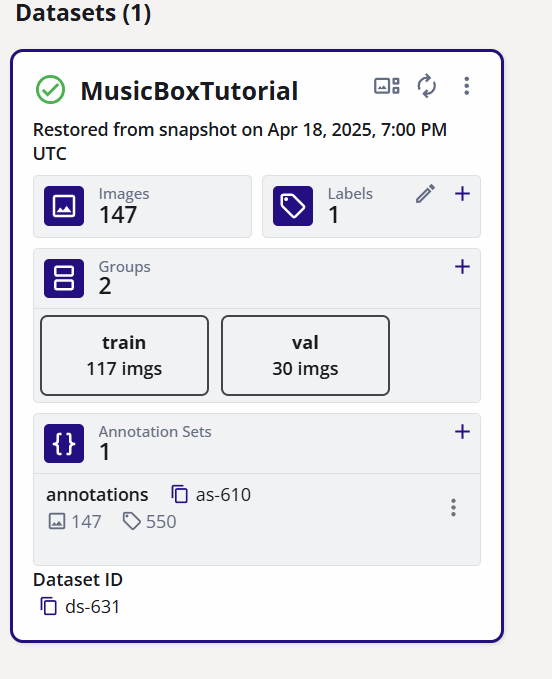
Model Training
As with other Studio features, model training has a dedicated user interface. See Model Training for details.
Inside the experiment, create a New Session and name it musicbox-detector. This name is also assigned to the cloud instance under the Studio console.
-
Trainer:
ModelPack -
Description:
Object Detection -
Dataset:
MusicBoxTutorial -
Groups: Select
trainandval
Most hyper parameters are auto-tuned by ModelPack, but some can be customized:
- Input Resolution:
640x360 -
Model Name:
Legacy(more model variants are going to be integrated in future versions) -
Epochs:
50 (default) -
Batch Size:
Default is 16.
Since our dataset is small, we need to use strong data augmentation to prevent overfitting and it is recommended to slightly increase the probability for each augmentation technique.
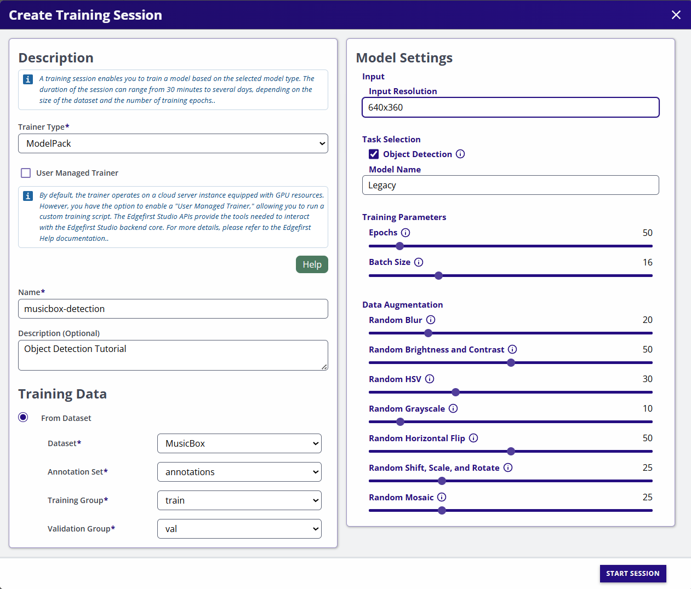
After creation, your session should look like the following.
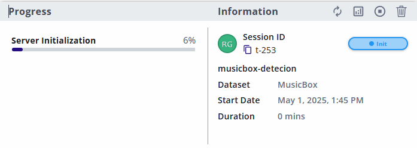
Model Deployment
Once training completes, follow these steps for deploying the model to the Maivin platform.
Begin testing the model with the object. If the model does not perform as expected, record a few more minutes of data and repeat the training process. Use this opportunity to identify edge cases and collect additional samples that can help improve the model's performance.
Conclusion
In this tutorial, we walked through the complete process of building and deploying an object detection model on an embedded device using the Maivin Platform, EdgeFirst Studio, and ModelPack. From data collection to model deployment, we covered a few essential steps of the machine learning pipeline:
- Data Collection using the Maivin Web Interface
- Data Annotation with EdgeFirst Studio
- Model Training with ModelPack
- Model Deployment on the Maivin unit
This workflow is not limited to object detection, the same process applies to any dataset type and to both segmentation and detection tasks, making it a powerful and consistent pipeline for embedded AI development.
Thanks to the Automatic Ground Truth Generation (AGTG) feature, the annotation process becomes significantly faster and easier often requiring just a few clicks per sequence to annotate large volumes of data. This drastically reduces the manual labelling effort while maintaining high-quality ground truth data.
By following this tutorial, you now have a practical understanding of how to:
- Collect and prepare real-world data using the Maivin platform
- Use AGTG to automate the annotation process
- Train compact, optimized models with ModelPack
- Deploy models to the edge for real-time inference
This workflow ensures repeatability, scalability, and efficient development for embedded machine learning applications. Whether you are building a smart camera, an industrial monitor, or a self driving vehicle, or an edge AI prototype, this pipeline helps you go from raw data to deployment quickly and effectively.